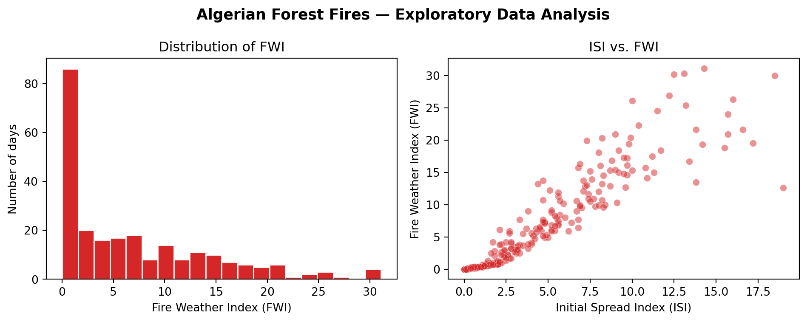

Lab 01: Introduction to Machine Learning in Python
Download the Lab Template
Download the lab template here and move to your eds232-labs repository.
The Python ML Ecosystem
Let’s meet the main ML python library players.
NumPy — Numerical Python
Before the ML-specific packages, NumPy is the backbone everything else is built on. It provides fast, efficient multi-dimensional arrays (ndarray) and element-wise math operations.
Almost every ML library stores data as NumPy arrays under the hood.
Example
Code
import numpy as np# Simulated daily weather readings from a forest monitoring stationtemperatures = np.array([28.0, 32.5, 36.1, 29.8, 41.0, 38.3, 22.5, 35.7])humidity = np.array([57.0, 42.0, 33.0, 65.0, 18.0, 25.0, 78.0, 38.0])print("Temperatures (C):", temperatures)print("Mean temperature :", np.mean(temperatures).round(2))print("Max temperature :", np.max(temperatures))print("Std deviation :", np.std(temperatures).round(2))# Operations apply element-wise — no loops needed!# Rough heat-dryness index: higher = greater fire concernheat_dryness = temperatures * (1- humidity /100)print("\nHeat-dryness index:", np.round(heat_dryness, 2))
Temperatures (C): [28. 32.5 36.1 29.8 41. 38.3 22.5 35.7]
Mean temperature : 32.99
Max temperature : 41.0
Std deviation : 5.64
Heat-dryness index: [12.04 18.85 24.19 10.43 33.62 28.72 4.95 22.13]
SciPy — Scientific Python
SciPy builds on NumPy and provides algorithms for:
Statistics (scipy.stats)
Linear algebra (scipy.linalg)
Optimization (scipy.optimize) — the math behind model training
Spatial data and distances (scipy.spatial)
In ML, SciPy is used for statistical tests, distance calculations, and preprocessing math. Many scikit-learn functions use SciPy internally.
Module
What it does
scipy.stats
Distributions, hypothesis tests, normality checks
scipy.spatial
Distance metrics (Euclidean, cosine, etc.)
scipy.sparse
Sparse matrices — efficient storage for high-dimensional data
scipy.optimize
Minimization functions that power gradient descent
Code
import scipy.stats as statsfrom scipy.spatial.distance import euclidean# --- scipy.stats: Are fire-day temperatures statistically different? ---fire_temps = np.array([38.5, 41.2, 36.8, 40.1, 39.5, 37.9, 42.0, 38.8])no_fire_temps = np.array([22.1, 28.4, 25.6, 30.2, 19.8, 26.5, 23.0, 27.1])t_stat, p_value = stats.ttest_ind(fire_temps, no_fire_temps)print("=== t-test: fire-day vs no-fire-day temperatures ===")print(f"Fire mean : {fire_temps.mean():.2f} C")print(f"No-fire mean: {no_fire_temps.mean():.2f} C")print(f"t-statistic : {t_stat:.3f}")print(f"p-value : {p_value:.6f}")print(f"Significant : {'Yes - temperature is a strong predictor!'if p_value <0.05else'No'}")# --- scipy.spatial: distance between two weather observations ---# Each observation: [Temperature, Humidity, Wind, Rain]day_A = [35.0, 28.0, 15.0, 0.0] # hot, dry, windy — fire likelyday_B = [22.0, 75.0, 5.0, 2.5] # cool, humid, calm, rainy — fire unlikelyprint(f"\nEuclidean distance between day A and day B: {euclidean(day_A, day_B):.2f}")print("(Large distance = very different weather conditions)")
=== t-test: fire-day vs no-fire-day temperatures ===
Fire mean : 39.35 C
No-fire mean: 25.34 C
t-statistic : 10.242
p-value : 0.000000
Significant : Yes - temperature is a strong predictor!
Euclidean distance between day A and day B: 49.84
(Large distance = very different weather conditions)
scikit-learn (sklearn) — Machine Learning Library
scikit-learn is the go-to library for classical machine learning in Python. It provides:
Dozens of ready-to-use algorithms (regression, decision trees, SVMs, k-means, etc.)
Consistent API — every model has the same .fit(), .predict(), .score() methods
Model evaluation — cross-validation, metrics, confusion matrices
Pipelines — chain preprocessing + modeling steps together cleanly
The sklearn API pattern — learn it once, use it everywhere:
from sklearn.some_module import SomeModelmodel = SomeModel() # 1. Create the modelmodel.fit(X_train, y_train) # 2. Train it on datapredictions = model.predict(X_test) # 3. Make predictionsscore = model.score(X_test, y_test) # 4. Evaluate it
This same 4-step pattern works for every sklearn algorithm.
Module
What it provides
sklearn.linear_model
Linear & Logistic Regression
sklearn.tree
Decision Trees
sklearn.ensemble
Random Forests, Gradient Boosting
sklearn.svm
Support Vector Machines
sklearn.neighbors
K-Nearest Neighbors
sklearn.cluster
K-Means, DBSCAN (unsupervised)
sklearn.preprocessing
Scaling, Encoding, Normalization
sklearn.model_selection
train_test_split, cross_val_score
sklearn.metrics
Accuracy, F1, RMSE, Confusion Matrix
statsmodels — Statistical Inference Library
statsmodels is the go-to library for statistical analysis and inference in Python. While sklearn focuses on prediction, statsmodels focuses on understanding your data — giving you the full picture of model diagnostics. It provides:
Detailed model summaries — coefficients, p-values, t-statistics, confidence intervals
Hypothesis testing — test whether a coefficient is statistically significant
Inference-first design — built for answering “does X actually affect Y?” not just “what does Y predict?”
Wide range of models — OLS, GLM, time series (ARIMA), logistic regression, and more
Residual diagnostics — check assumptions like normality and homoscedasticity
The statsmodels pattern:
import statsmodels.api as smX_with_const = sm.add_constant(X) # 1. Add intercept manuallymodel = sm.OLS(y, X_with_const).fit() # 2. Fit the modelprint(model.summary()) # 3. Get the full stats breakdown
Key attributes after fitting:
Attribute
What it gives you
model.params
Coefficients (like coef_ in sklearn)
model.pvalues
P-values for each coefficient
model.tvalues
T-statistics
model.bse
Standard errors
model.conf_int()
95% confidence intervals
model.rsquared
R² score
model.summary()
Full table with all of the above
Ecosystem Summary
NumPy -> Arrays and math (the foundation of everything)
SciPy -> Scientific algorithms: stats, distances, optimization
Pandas -> Data manipulation and exploration
scikit-learn -> Classical ML models, preprocessing, evaluation
statsmodels -> Statistical Analysis and inference
Demo: The Algerian Forest Fires Dataset
We will use the Algerian Forest Fires dataset from the UCI Machine Learning Repository, fetched directly using the ucimlrepo package.
Background
This dataset was collected across two regions of Algeria — Bejaia (northeast) and Sidi Bel-Abbes (northwest) — during the summer of 2012 (June to September). Researchers recorded daily weather conditions alongside fire danger indices.
Predictor and Target
For this lab we’ll fit a simple linear regression with one predictor:
Variable
Role
Description
ISI
Predictor (X)
Initial Spread Index — measures how fast a fire would spread based on wind and fuel moisture
FWI
Target (y)
Fire Weather Index — overall measure of fire danger
These two are directly related in the Canadian Forest Fire Weather Index system: ISI feeds into the FWI calculation, so we expect a strong linear relationship.
This is a supervised regression problem: given X, learn \(\hat{f}(X) = \beta_0 + \beta_1 X\) that predicts FWI.
Row 165 has a data entry error where two values were merged into one cell (e.g., DC = "14.6 9"). Pandas read the affected columns (DC, FWI) as strings instead of numbers. Converting to numeric with errors='coerce' turns that bad value into NaN, making the corrupted row easy to identify and remove.
Code
print("DC and FWI column types before conversion:")print(df[['DC', 'FWI']].dtypes)
DC and FWI column types before conversion:
DC object
FWI object
dtype: object
Code
numeric_cols = [c for c in df.columns if c !='region']df[numeric_cols] = df[numeric_cols].apply(pd.to_numeric, errors='coerce')print("DC and FWI column types after conversion:")print(df[['DC', 'FWI']].dtypes)
DC and FWI column types after conversion:
DC float64
FWI float64
dtype: object
Step 3: Drop rows with missing values
Any row with a NaN is unusable for modeling. Dropping them removes the one corrupted row identified above.
region object
day int64
month int64
year int64
Temperature int64
RH int64
Ws int64
Rain float64
FFMC float64
DMC float64
DC float64
ISI float64
BUI float64
FWI float64
dtype: object
Exploratory Data Analysis
Before modeling, let’s look at the distribution of our target variable and the relationship between our predictor and target.
Two plots below:
FWI distribution — what does the range of fire danger look like?
ISI vs. FWI — does a higher initial spread index correspond to higher overall fire danger?
Code
import matplotlib.pyplot as pltfig, axes = plt.subplots(1, 2, figsize=(10, 4))# --- Plot 1: FWI distribution ---axes[0].hist(df['FWI'], bins=20, color='#d62728', edgecolor='white')axes[0].set_xlabel('Fire Weather Index (FWI)')axes[0].set_ylabel('Number of days')axes[0].set_title('Distribution of FWI')# --- Plot 2: ISI vs FWI ---axes[1].scatter(df['ISI'], df['FWI'], alpha=0.5, color='#d62728', edgecolor='white', linewidths=0.3)axes[1].set_xlabel('Initial Spread Index (ISI)')axes[1].set_ylabel('Fire Weather Index (FWI)')axes[1].set_title('ISI vs. FWI')plt.suptitle('Algerian Forest Fires — Exploratory Data Analysis', fontsize=13, fontweight='bold')plt.tight_layout()plt.show()

Preparing X and y
Extract the single predictor (ISI) and the target (FWI) from df. sklearn expects X to be 2D — even for a single feature — so we use double brackets df[['ISI']] to get a one-column DataFrame rather than a flat array.
Before fitting a model, we split our data into two non-overlapping sets:
All Data (243 days)
|
|-- Training Set (80% = ~194 days) <-- model learns from this
|
|-- Test Set (20% = ~49 days) <-- model is evaluated on this
Why? We want to know how the model performs on data it has never seen — that’s what matters in practice. Evaluating on the same data used for training gives an overly optimistic picture.
After fitting on the training set, we’ll compare R² on both sets. For a well-behaved model like linear regression, the two should be close — confirming that the model generalizes rather than just fitting noise.
train_test_split in Depth
scikit-learn provides train_test_split to split data automatically and safely.
from sklearn.model_selection import train_test_splitX_train, X_test, y_train, y_test = train_test_split( X, # feature matrix y, # target vector test_size, # fraction or count to put in the test set random_state # integer seed for reproducibility)
Let’s dig into each parameter.
random_state
train_test_split randomly shuffles the data before splitting. That is good — you don’t want all fire days landing in the training set.
But random shuffling means a different split every run, making results impossible to reproduce or compare. random_state sets a fixed random seed so the split is identical every time.
random_state=42 — any integer; 42 is common convention
random_state=None — truly random every run (not reproducible)
stratify
For classification problems, train_test_split accepts a stratify=y argument that preserves class proportions in both splits. For regression, there are no discrete classes, so stratify is not applicable — the split is always random.
test_size
test_size accepts:
A float between 0 and 1 — proportion of data (e.g. 0.2 = 20%)
An integer — exact number of samples (e.g. 50 = 50 days)
Split
Train %
Test %
Best for
80/20
80
20
Default; works well for most datasets
70/30
70
30
Smaller datasets needing more test coverage
90/10
90
10
Large datasets where training data is precious
Rule of thumb: more training data means a better model, but you need at least 30–50 test samples for a reliable evaluation.
How Test Size Affects Model Performance
Choosing test_size involves a tradeoff:
Smaller test set → more data for training → higher train accuracy, but the test estimate is based on fewer samples and is less reliable (higher variance across different random splits)
Larger test set → more reliable performance estimate, but the model trains on less data
An Example
Code
from sklearn.model_selection import train_test_split# Standard 80/20 splitX_train, X_test, y_train, y_test = train_test_split( X, y, test_size=0.2, # 20% goes to test set random_state=42# fix the random seed)print(f"Original dataset : {X.shape[0]} observations")print()print("Training set:")print(f" X_train: {X_train.shape} -> {len(X_train)} days")print(f" y_train: {y_train.shape}")print()print("Test set:")print(f" X_test : {X_test.shape} -> {len(X_test)} days")print(f" y_test : {y_test.shape}")
Original dataset : 243 observations
Training set:
X_train: (194, 1) -> 194 days
y_train: (194,)
Test set:
X_test : (49, 1) -> 49 days
y_test : (49,)